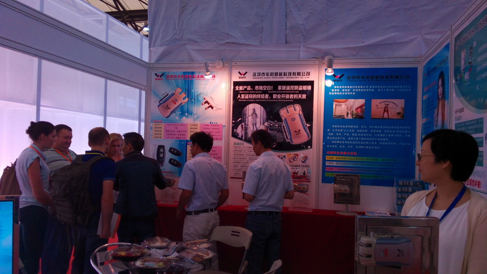

No Centro de Convenções e Exposições de Shenzhen, a Feira de Alta Tecnologia abriu sob o tema “Impulsionar a Inovação, Acelerar o Desenvolvimento Verde”. A WAFU apresentou sua gama completa de fechaduras invisíveis e fechaduras inteligentes com controlo remoto, atraindo grande atenção de visitantes nacionais e internacionais já no primeiro dia.

WAFU Apresenta Linha Completa de Fechaduras Invisíveis e Soluções Smart Home
Na feira deste ano, a WAFU apresentou um portfólio completo de produtos, incluindo fechaduras remotas invisíveis, fechaduras ocultas para uso doméstico, fechaduras inteligentes remotas, fechaduras invisíveis antirroubo e soluções de casa inteligente. A gama também inclui fechaduras remotas para portas de vidro e fechaduras invisíveis para portas de vidro, projetadas para aplicações residenciais e comerciais.
As fechaduras remotas invisíveis da WAFU suportam vários métodos de desbloqueio e são compatíveis com aplicações móveis via rede sem fios, oferecendo controlo flexível e conveniente. A combinação de instalação oculta, operação remota e integração com sistemas de casa inteligente demonstra plenamente a força tecnológica e a inovação da WAFU no setor de fechaduras inteligentes.
Grande Fluxo de Visitantes e Fortes Intenções de Cooperação
No primeiro dia da Feira de Alta Tecnologia, o stand da WAFU rapidamente entrou em “modo ocupado”. Um grande número de visitantes, distribuidores e parceiros de projetos parou para experimentar as fechaduras remotas invisíveis e as soluções inteligentes apresentadas.
Muitos clientes expressaram claras intenções de cooperação após as demonstrações no local, e alguns até assinaram acordos de compra diretamente no stand. Compradores internacionais, em particular, demonstraram forte interesse na série de fechaduras invisíveis da WAFU, reconhecendo seu potencial nos mercados globais.
Reconhecimento de Associações do Setor e da Mídia
Durante a exposição, as fechaduras remotas invisíveis da WAFU foram selecionadas como produto recomendado chave pela Associação de Casa Verde de Shenzhen, destacando o alinhamento da marca com conceitos de vida segura, ecológica e inteligente.
Ao mesmo tempo, os produtos da WAFU receberam cobertura da mídia no local pelo Canal Rio das Pérolas de Guangdong. A reportagem reforçou que as fechaduras remotas invisíveis e as fechaduras remotas domésticas da WAFU conquistaram a confiança e o reconhecimento dos usuários, tornando-se soluções representativas de fechaduras inteligentes confiáveis e fáceis de usar.
Feedback Positivo de Compradores Nacionais e Internacionais
Ao longo da exposição, as fechaduras remotas da WAFU despertaram grande interesse entre compradores nacionais e internacionais. Muitos visitantes elogiaram a estrutura oculta do produto, a conveniência do controlo remoto e o desempenho antirroubo.
A WAFU expressou sincera gratidão aos organizadores por fornecerem esta valiosa plataforma para a indústria de fechaduras inteligentes. A feira não só ajudou a WAFU a conectar-se com mais parceiros, como também reforçou a confiança da marca na expansão de sua presença global no mercado de fechaduras invisíveis e soluções de casa inteligente.
Resumo da Exposição
Desde fechaduras remotas invisíveis até integração com casas inteligentes, a participação da WAFU na Feira de Alta Tecnologia de Shenzhen destacou sua força abrangente em design de produtos, tecnologia e desenvolvimento de mercado. Com forte interesse de compradores internacionais, reconhecimento de associações do setor e cobertura da mídia, as fechaduras invisíveis da WAFU mais uma vez provaram ser soluções de segurança confiáveis e amplamente aceitas para residências e empresas modernas.